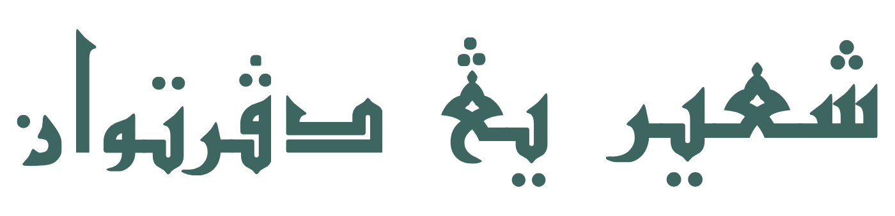
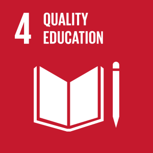
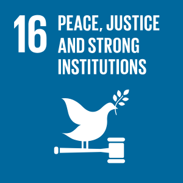

Tajuk Jawiassets/tajuk-jawi.pngSyair Yang Di-Pertuan
Analisis Unsur Diplomasi Hubungan Brunei–British dalam Manuskrip Syair Yang Di-Pertuan
Sebuah syair 1,022 rangkap yang merakam tiga peristiwa diplomatik tahun 1922 — dibaca semula sebagai dokumen budaya-politik, bukan sekadar puisi istiadat.
Pengenalan
ManuskripPermasalahan
3 jurang01Jurang fokus
Kajian terdahulu menumpu adat istiadat & estetika — tanpa analisis diplomasi.
Norhayati, 2019; Norhayati & Masuriyati, 202202Ketidakseimbangan sumber
Historiografi hubungan Brunei–British banyak bergantung kepada rekod kolonial yang bersifat Eurosentrik.
Horton, 2005; Hussainmiya, 201403Ralat faktual
Tarikh dicatat 1340H/1920M — dibetulkan kepada 1341H / 4 Disember 1922.
Norhayati, 2019; Abdul Razak Hassanuddin, 1979Objektif
UtamaMenganalisis peristiwa dan strategi diplomasi Brunei dalam teks syair.
Analisis kandungan & tematikMeneroka hubungan Brunei–British melalui simbolisme, naratif dan konteks Perjanjian 1888 & 1906.
Kontekstual sejarahMenilai peranan syair sebagai dokumen budaya-politik yang melengkapi rekod kolonial.
Silang semak dua sumberMetodologi
KualitatifFilologi
- Pembacaan teks dan interpretasi Jawi
- Kesahan
- Makna mengikut konteks zaman
Kandungan & Tematik
- Simbolisme
- Naratif kuasa
- Bahasa istiadat diraja
Kontekstual Sejarah
- Silang semak dengan rekod kolonial British
Dapatan
Tiga peristiwa diplomatikGaris Masa
Konteks sejarah & manuskripKepentingan
ImpakAkademik
Mengisi jurang diplomasi dalam kajian manuskrip Brunei; kesusasteraan sebagai alat hubungan antarabangsa.
Wawasan Brunei 2035
Memperkukuh penyelidikan warisan dan tadbir urus berteraskan Melayu Islam Beraja (MIB).
SDG 4 & 16
Pendidikan berkualiti; keamanan, keadilan dan institusi yang utuh.

SDG 4sdg-4.png
SDG 16sdg-16.pngPengkaji & Penyelia
Pusat Kajian Manuskrip Islam · UNISSA